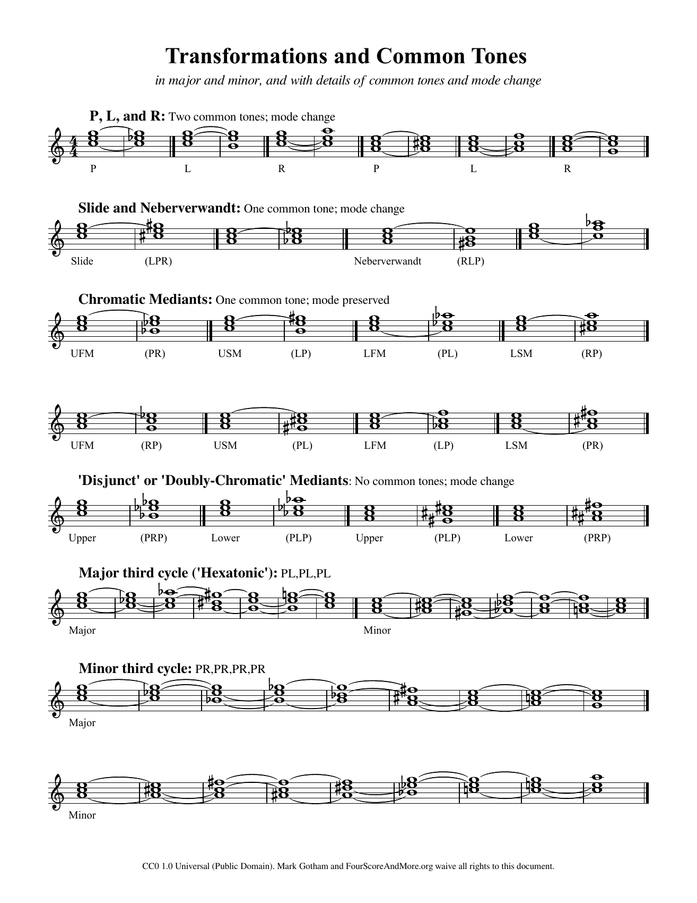
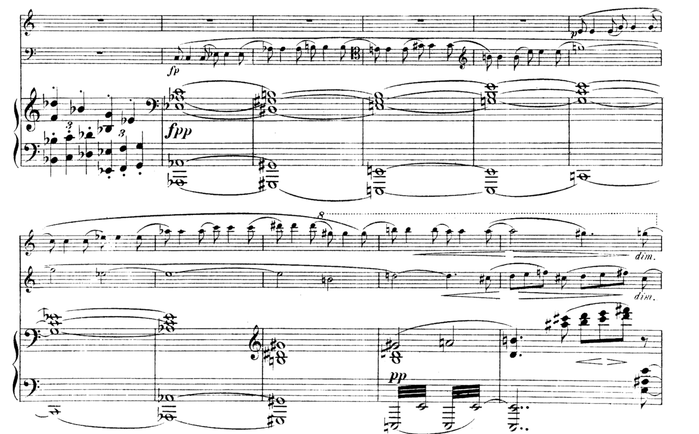
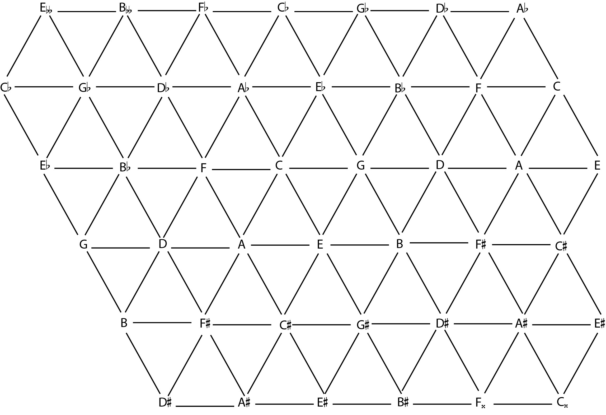
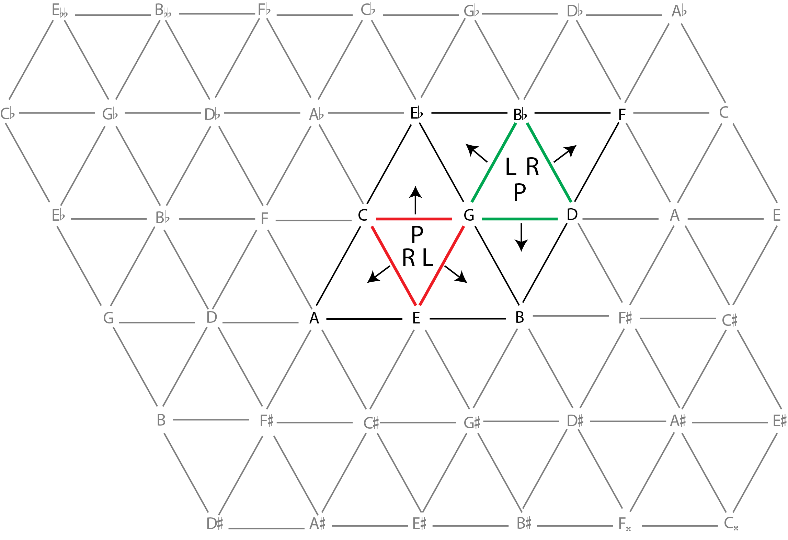
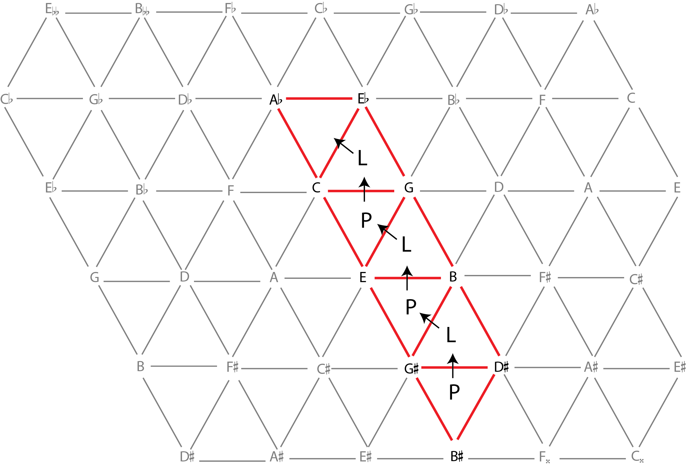
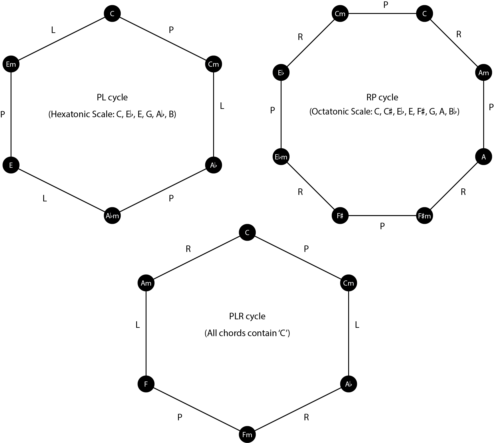
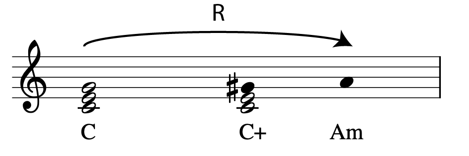
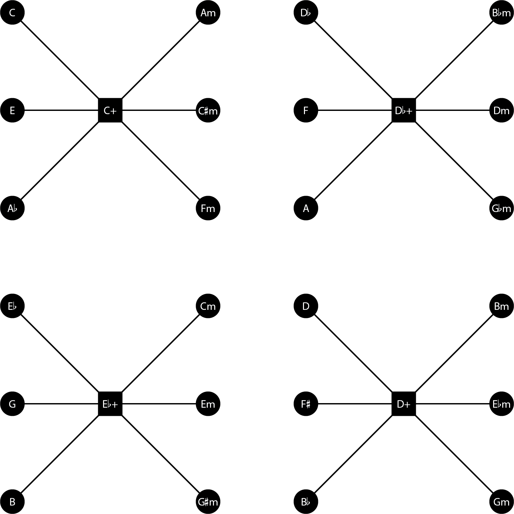
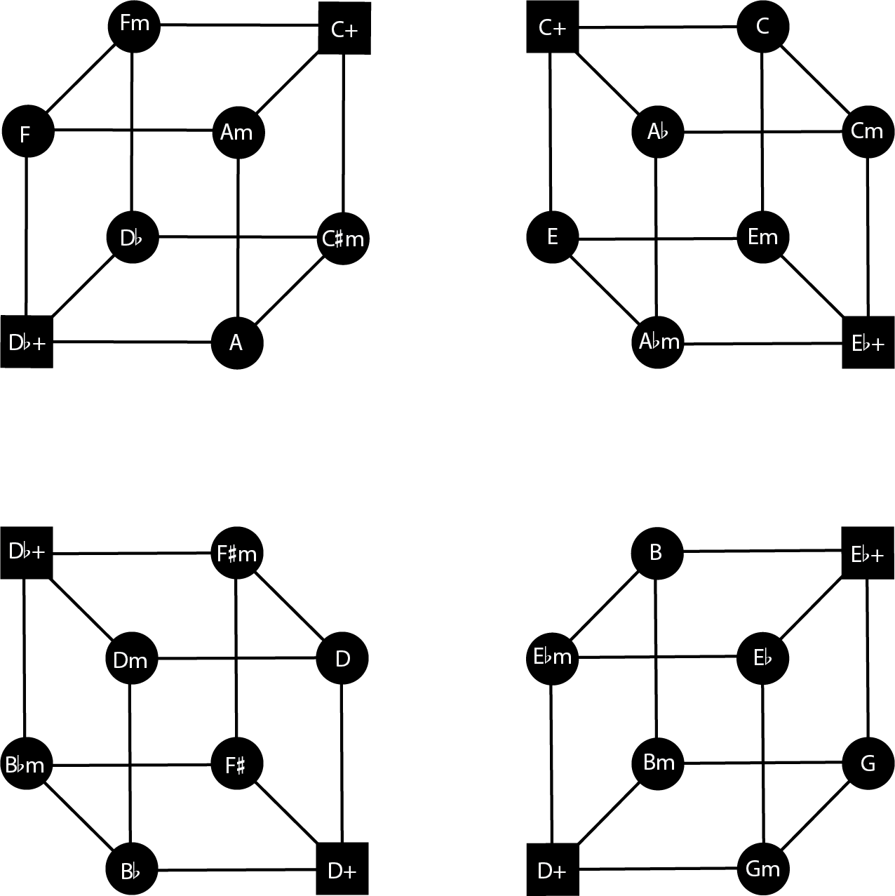
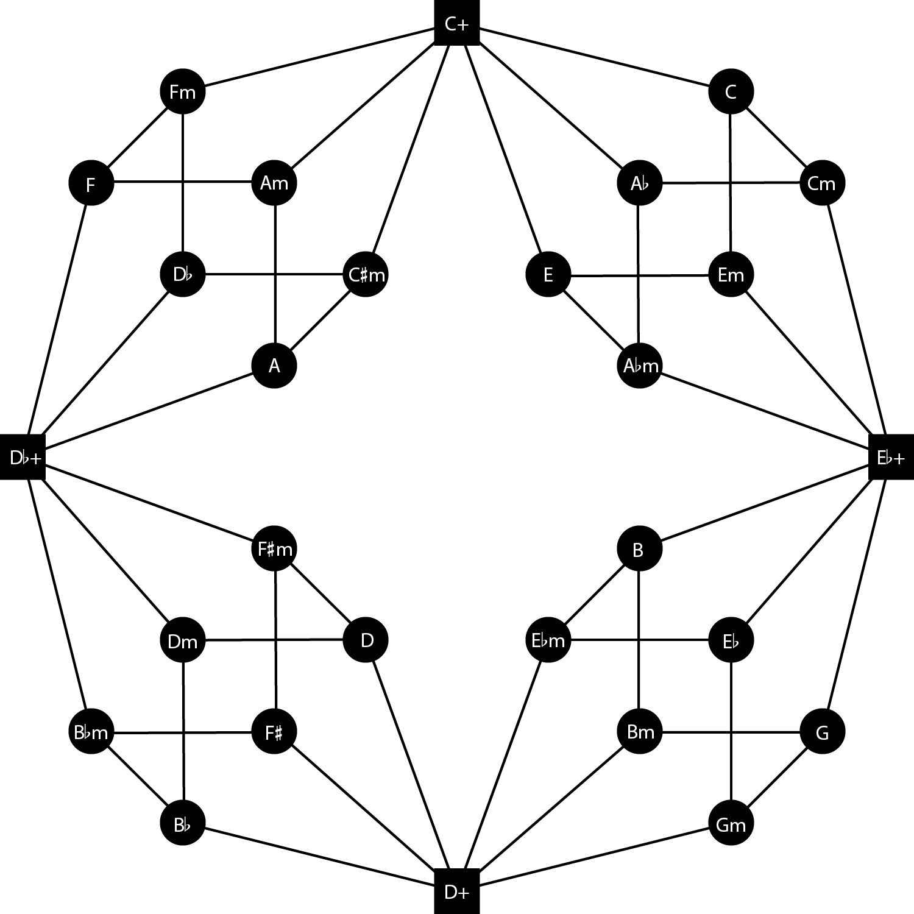

Open Music Theory：繁體中文版
新黎曼三和弦進行
重點整理
- 新黎曼理論以音樂理論家 Hugo Riemann 命名，藉由共同音關係解釋三和弦進行，重點在於和弦如何銜接，而不必始終留在同一調內。
- 本章每一種具名的新黎曼變換，都在一個大三和弦與一個小三和弦之間切換。
- 最基本的變換只移動一個音，保留兩個共同音：
- 關係變換（R，Relative）連接大三和弦與根音低小三度的小三和弦，例如 C 與 Am。
- 同主音變換（P，Parallel）連接同根音的大、小三和弦，例如 C 與 Cm。
- 導音交換變換（L，Leading-tone exchange）連接大三和弦與根音高大三度的小三和弦，例如 C 與 Em。
- 另一些重要變換保留一個共同音，移動兩個音：
- 滑移變換（S，Slide）連接大三和弦與根音高半音的小三和弦，例如 C 與 C♯m。
- 鄰接關係變換（N，Nebenverwandt）連接大三和弦與根音低五度的小三和弦，例如 C 與 Fm。
- 六音極點變換（H，Hexpole）連接大三和弦與根音低大三度的小三和弦，例如 C 與 A♭m。它不保留共同音，而讓每個音各移動半音，抵達新和弦。
- 各種變換以單一字母縮寫：R、P、L、S、N、H。
- 理論家也建立了可視化這些關係的網路，例如音網（Tonnetz）、Weitzmann 區域，以及立方體舞（Cube Dance）。

- Transformations and Common Tones＝變換與共同音；
- 副標為「大、小三和弦中的變換，附共同音與大小性質改變的細節」。
P、L、R：兩個共同音，大小性質改變。
- Slide與Nebenverwandt：一個共同音，大小性質改變；
- 原譜把後者印為Neberverwandt。
Chromatic Mediants＝半音中音關係：一個共同音，大小性質保持。
- UFM／USM／LFM／LSM分別為上方降型／上方升型／下方降型／下方升型中音關係：上、下指新根音相對原根音的位置，升、降區分三度根音的變化形式；
- 原譜各列PR、LP、PL、RP等操作順序保留。
- Disjunct or Doubly-Chromatic Mediants＝分離型或雙重半音中音關係：沒有共同音，大小性質改變；
- Upper／Lower＝上方／下方。
- Major third cycle (Hexatonic)＝大三度循環（六音系統），PL做三輪；
- Minor third cycle＝小三度循環，PR做四輪。
Major／Minor＝大三和弦／小三和弦起始。
譜中圓弧顯示共同音的保持，所有音符與組合代號保留。
頁底授權：CC0 1.0通用（公眾領域），Mark Gotham與FourScoreAndMore.org放棄對本文件的所有權利。
十九世紀晚期，作曲家經常使用難以用傳統羅馬數字分析說明的三和弦進行。先看布拉姆斯小提琴與大提琴協奏曲的這個片段，見例1：
{kind=link}

- 此頁沒有英文樂器標籤；
- 上兩行為獨奏聲部，下方大譜表為縮編。
- p＝弱，pp＝很弱；
- fp＝強後立即轉弱；
- fpp＝強奏後立即轉很弱；
- dim.＝漸弱；
- 8與虛線表示高八度演奏。
漸強、漸弱楔形與圓滑／延音線保留。
錄音10:22為原作者提供的位置，未在本輪聽驗。
上方片段的和弦縮譜見例2。進行連接兩個 A♭ 大三和弦；但中間的和弦，既難以有效地歸入 A♭ 大調，也不遵循功能和聲的慣例。
{kind=link}
縮譜以4/4拍呈現七個和弦位置：A♭大三和弦、G♯小三和弦、E大三和弦、E小三和弦、C大三和弦、C小三和弦、A♭大三和弦。
開头A♭與G♯為等音，依原譜拼寫保留。
你或許會直接將這段音樂歸為「非功能和聲」，但實際聽來，它仍有自己的邏輯。Richard Cohn 問道：「如果這類音樂——以三和弦為材料，功能卻不明確——不能完全依自然音調性的原則取得連貫性，那麼，還有哪些原則能使它連貫？」（1998，第169頁）
查看英文原文
Key Takeaways
- Neo-Riemannian theory, named after music theorist Hugo Riemann, provides a means of rationalizing triadic progressions that involve sharing common tones, more so than staying within one key.
- Every Neo-Riemannian transformation toggles between one major and one minor triad.
- The most basic Neo-Riemannian transformations shift one note and keep two common tones.
- Relative relates a major triad and the minor triad a minor third lower, such as C and Ami.
- Parallel relates a major triad and the minor triad sharing the same root, such as C and Cmi.
- Leading-tone exchange relates a major triad and the minor triad a major third higher, such as C and Emi.
- Other important Neo-Riemannian transformations keep one common tone and shift two notes.
- Slide relates a major triad and the minor triad one semitone higher, such as C and C♯mi.
- Nebenverwandt relates a major triad and the minor triad a fifth below, such as C and Fmi.
- Hexpole relates a major triad and the minor triad a major third below, such as C and A♭mi. This transformation is unique because it does not keep any common tones; instead, each note is shifted by a half step to get to the new chord.
- Neo-Riemannian transformations are abbreviated to one letter each: R, P, L, S, N, and H.
- Theorists have come up with several networks of transformations that help visualize these relationships, such as the Tonnetz, the Weitzmann regions, and the Cube Dance.
A one-page summary of transformations is available as an interactive score and as a PDF.
In the late 19th century, composers often used triadic progressions that confound conventional Roman numeral analysis. Consider the following excerpt from Brahms’s concerto for violin and cello (Example 1):
A reduction of the chord progression in the excerpt above can be found in Example 2. The passage connects two A♭ major triads; however, the chords in between those triads do not belong to A♭ major in any useful way, nor do they follow any of the conventions of functional harmony.
One might dismiss the passage altogether as “non-functional harmony,” but when you listen to it, it follows a certain kind of logic. As Richard Cohn writes, “if this music [music that is triadic but functionally indeterminate] is not fully coherent according to the principles of diatonic tonality, by what other principles might it cohere?” (1998, 169).
新黎曼理論描述一種不必依賴調性脈絡，也能連接大、小三和弦的方法。例3展示三種基本操作。每種操作都保留兩個共同音，並改變三和弦的大小性質。
- 關係變換（R，Relative）保留三和弦中的大三度，讓剩餘的一音移動全音。
- 同主音變換（P，Parallel）保留三和弦中的完全五度，讓剩餘的一音移動半音。
- 導音交換變換（L，Leading-Tone Exchange）保留三和弦中的小三度，讓剩餘的一音移動半音。
{kind=link}
- Relative (R)＝關係變換；
- Parallel (P)＝同主音變換；
- Leading-Tone Exchange (L)＝導音交換。
- 圖中R保持C與E、G移到A；
- P保持C與G、E降為E♭；
- L保持E與G、C降為B。
雙向箭頭表示可反向操作，並非只允許圖上由左至右。
每種變換都是在兩個和弦之間切換。可以想像鍵盤的 Caps Lock：原本輸入小寫字母，按一下就改輸入大寫；再按一下，就回到小寫，而不會跑到第三種字母形態。
{kind=link}
圖上每一個L都表示導音交換：C大三和弦與E小三和弦來回交替。
- etc.＝依此類推；
- 連續兩次L回到原和弦。
原圖英文alt的短碼殘片已由中文說明取代。
多數十九世紀作曲家不會一直重複同一種變換，但二十世紀的作品中可以找到這種手法。例如 Laurie Anderson 的〈O Superman〉，全曲持續使用 L 變換。
查看英文原文
Neo-Riemannian Transformations
Neo-Riemannian theory describes a way of connecting major and minor triads without a tonal context. Example 3 shows the three basic Neo-Riemannian operations. Notice that each operation preserves two common tones in a triad and changes its mode.
- The Relative transformation (R) preserves the major third in the triad and moves the remaining note by whole tone.
- The Parallel transformation (P) preserves the perfect fifth in the triad and moves the remaining note by semitone.
- The Leading-Tone Exchange transformation (L) preserves the minor third in the triad and moves the remaining note by semitone.
It’s important to note that each transformation is a toggle between two chords. As an analogy, think of the caps lock key on your keyboard, which toggles between two cases of letters. If you are typing with lowercase letters and then press caps lock, this tells your keyboard to begin typing in uppercase letters. But if you press caps lock again, it toggles back to lowercase—it doesn’t go to some third case.
Similarly, if you do the L transformation on a C major triad, you get an E minor triad. If you do the L transformation on an E minor triad, you return to a C major triad. Put another way, successive repetitions of the same transformation alternate between two chords, as shown in Example 4.
While most 19th-century composers didn’t write progressions using the same transformation over and over again, you will find this technique used in twentieth-century works like “O Superman” by Laurie Anderson, which uses successive L transformations throughout.
例5是一張音網。音網將音高排列成特定的圖形：由左至右是完全五度，由左上至右下是大三度，由左下至右上是小三度。每個基本三角形的三個頂點，構成一個大三和弦或小三和弦。圖上雖然只畫出有限的平面區域，理論上若不把等音視為相同，音網可以無限延伸；若將等音視為相同，就會形成環面形狀，動畫見此。
新黎曼變換可以想像成：沿三角形的其中一條邊，把三角形翻到另一側。
{kind=link}

- 由左往右沿水平線移動是完全五度；
- 左上至右下為大三度；
- 左下至右上為小三度。
- 圖中包含升、降、重升及重降音名，每個相鄰基本三角形的三音構成一個大或小三和弦；
- 音名拼寫保留，不把等音重複位置刪除。
- P 同主音變換，沿完全五度的橫向邊翻轉。
- R 關係變換，沿大三度的左上至右下斜邊翻轉。
- L 導音交換變換，沿小三度的右上至左下斜邊翻轉。
{kind=link}

紅三角形C–E–G：P沿C–G得到Cm，L沿E–G得到Em，R沿C–E得到Am。
- 綠三角形G–B♭–D：P得到G大三和弦，L得到E♭大三和弦，R得到B♭大三和弦；
- 相對的翻轉方向與大三和弦相反。
例6展示各種變換在音網上的樣貌。以紅邊標出的 C 大三和弦為例，P 沿 C–G 邊翻轉，得到 C 小三和弦；L 沿 G–E 邊翻轉，得到 E 小三和弦；R 則沿 C–E 邊翻轉，得到 A 小三和弦。若從小三和弦開始，例如綠邊的 G 小三和弦，翻轉方向就都相反。
回到布拉姆斯小提琴與大提琴協奏曲，現在便有辦法理解這串和弦如何連貫。原文在此稱為例7的分析圖，展示兩個 A♭ 大三和弦之間，是由一連串 P 與 L 變換連接。
{kind=link}

紅色路徑由下向上依序為G♯、G♯m、E、Em、C、Cm、A♭，變換依序P、L、P、L、P、L。
- 起點G♯–B♯–D♯與終點A♭–C–E♭等音；
- 這是同一PL循環在未折疊的音網上不同位置的表示。
布拉姆斯這段進行，從音網右下方沿一列三角形向上移動，見例8。起點圖上寫作 G♯ 大三和弦，需要將它等音解讀為 A♭ 大三和弦。
音網有助於呈現大、小三和弦之間的接近程度：同一調內的三和弦大多聚在相近位置，調性差異大的和弦則相隔較遠。反過來，音網也能幫助我們想出有趣的和弦進行，超越只依共通實踐和聲語法時容易想到的選擇。
查看英文原文
The Tonnetz
Example 5 shows a Tonnetz. A Tonnetz is a visual representation of pitches arranged such that perfect fifths are read from left to right, major thirds are read diagonally from the top left to the bottom right, and minor thirds are read diagonally from the bottom left to the top right. Any three pitches in a triangle form a major or minor triad. Although it’s pictured here as a flat, confined plane, theoretically, without enharmonic equivalence, the Tonnetz continues on infinitely; with enharmonic equivalence, the Tonnetz forms a torus shape.
Neo-Riemannian transformations can be visualized by flipping a triangle along one of its three edges.
- The (P)arallel transformation flips the triangle along the edge belonging to the line of perfect fifths (left to right).
- The (R)elative transformation flips the triangle along the edge belonging to the line of major thirds (top left to bottom right).
- The (L)eading-tone transformation flips the triangle along the edge belonging to the line of minor thirds (top right to bottom left).
Example 6 shows each of the transformations on the Tonnetz. If you perform a P transformation on the C major triad, highlighted with red edges, it will flip along the C–G side to become C minor. Similarly, L will flip the triad along the G–E edge to become E minor, and R will flip the triad along the C–E edge to become A minor. Note that if you start on a minor triad, such as the G minor triad highlighted with green edges, all of the flips will be in the opposite directions.
Returning to the example from Brahms’s concerto for violin and cello, we now have a means of understanding how this chord progression works. Example 7 shows that the two A♭ major triads are connected by a series of P and L transformations between chords.
The excerpt from the Brahms concerto navigates a column of triangles moving upward from the bottom right of the Tonnetz, shown in Example 8. Note that you need to enharmonically re-interpret the G♯ major triad as an A♭ major triad at the starting point.
The Tonnetz is useful for visualizing the proximity of major and minor triads; notice that all of the triads in a given key are close together, while tonally disparate keys are also far apart on the Tonnetz. Conversely, the Tonnetz is helpful for imagining interesting chord progressions that you might not think of if you’re limiting yourself to typical common-practice syntax.
雖然新黎曼理論幾乎可以用來建立或分析任何大、小三和弦進行，作曲家卻經常偏好能形成封閉循環的操作鏈。循環從同一和弦出發，最後也回到它，途中依循固定的變換模式，與模進有些相似。前面的布拉姆斯進行就是 PL 循環：它交替採用 P 與 L，並在同一和弦上開始與結束。
交替使用兩種基本變換，可以形成三種循環：PL、RP、RL。如例9所示，PL 與 RP 不必經過太多次變換就能回到起點：PL 需要六次，RP 需要八次。
{kind=link}
上列PL循環：C→Cm→A♭→A♭m→E→Em→C，共六次變換。
- 下列RP循環：C→Am→A→F♯m→F♯→E♭m→E♭→Cm→C，共八次變換；
- 部分位置使用等音拼寫，依原譜保留。
相較之下，RL 循環（例10）很長，會經過全部二十四個大、小三和弦。由於回到起點需要很久，這個循環常被略過，或只呈現其中一段。
原圖只示範RL長循環的開頭：C→Am→F→Dm→B♭→Gm→E♭→Cm→A♭→Fm，圖末etc.表示繼續。
- 完整RL循環會經過24個大、小三和弦；
- 原圖沒有把24個全部印出，這是原例刻意的截短。
還有一種值得注意、使用三種基本變換的循環：PLR。如例11所示，把 P–L–R 的組合做兩輪，就會回到起始和弦。
{kind=link}
- 圖中依序標P、L、R、P、L、R；
- 六次操作後回到C。
六個不同三和弦C、Cm、A♭、Fm、F、Am都包含音C。
{kind=link}

- PL cycle＝PL循環；
- Hexatonic Scale＝六音音階：C、E♭、E、G、A♭、B。
- RP cycle＝RP循環；
- Octatonic Scale＝八音音階：C、C♯、E♭、E、F♯、G、A、B♭。
- PLR cycle＝PLR循環；
- All chords contain C＝所有和弦都含C。
- 頂點名稱中m表示小三和弦；
- P、L、R沿邊標出操作。
上述循環中，PL 與 RP 都能將其所有三和弦用到的音，匯集成一個母音階。PL 產生六音音階，由半音與小三度交替構成；RP 產生八音音階，由半音與大二度交替構成。兩者都具有對稱性，可以視為整個循環的整體聲響。每個 PLR 循環則圍繞一個共同音：循環中的每個三和弦都包含這個音。
例12將這些循環畫成圖。
查看英文原文
Chains or Cycles of Transformations
While you can use Neo-Riemannian theory to create or analyze just about any chord progression, composers have often focused on chains of operations that create closed cycles of triads. Cycles begin and end on the same chord, and they follow a specific pattern of transformations (much like a sequence). The progression from the Brahms example above is a PL cycle because it alternates P and L transformations and begins and ends on the same chord.
There are three possible cycles that use two transformations: the PL cycle, the RP cycle, and the RL cycle. As you can see in Example 9, the PL and RP cycles “close the loop” after relatively few transformations: six for the PL cycle, and eight for the RP cycle.
Conversely, the RL cycle (Example 10) is is quite long: it passes through all 24 major and minor triads. Since this cycle takes so long to “close the loop,” it is often ignored or presented in truncated form.
There is one three-transformation cycle that is noteworthy: the PLR cycle. As Example 11 shows, it takes two cycles of the PLR transformations to return to the starting chord.
Of the cycles mentioned above, both the PL and RP cycles generate a parent scale made up of all of the notes used by its constituent triads. The PL cycle generates the hexatonic scale, a symmetrical scale made up of alternating semitones and minor thirds. The RP cycle generates an octatonic scale, another symmetrical scale made up of alternating semitones and major seconds. You might consider these scales to represent the “overall sound” of the cycle. Each PLR cycle is centered around a single pitch, which is contained in each of the triads within the cycle.
Each of these cycles is illustrated in Example 12.
還有三種變換，在作品中出現得夠頻繁，值得在此介紹。
- 滑移變換（S，Slide）的名稱來自「滑動」。它的做法恰好與 P 相反：將三和弦中構成完全五度的兩音，各移動半音，改變和弦的大小性質。[1]
- 鄰接關係變換（N，Nebenverwandt）將三和弦中構成小三度的兩音，各移動半音，同樣改變和弦的大小性質。Nebenverwandt 在德文中意為「鄰接相關」，形容這組三度如鄰音般的移動。[2]
- 六音極點變換（H，Hexpole）讓每個聲部各移動半音，連接根音相距三度、大小性質相反的三和弦；兩和弦就是前述六音 PL 循環中的兩個極點，見例12。[3]
這三種變換見例13。
{kind=link}
S (Slide)＝滑移：C與G各上行半音，E保留。
N＝鄰接關係：E與G各上行半音到F與A♭，C保留。
H (Hexatonic Pole)＝六音極點：C降到C♭、E降到E♭、G升到A♭，沒有共同音。
- 圖內把Nebenverwandt誤排為Neberverwandt；
- 中文採正文的正確拼寫。
這些變換都可以視為基本 P、L、R 的組合。例如，H 可以寫成 PLP。事實上，任意兩個大三和弦或小三和弦之間，都能以這些變換的組合連接；五步以內，就能從任何一個三和弦走到另一個。其中特別有意思的是採用節約式聲部連接的進行，也就是每個聲部的移動都不超過級進。還有許多組合值得自己試試！
查看英文原文
Other Transformations
There are three other types of Neo-Riemannian transformations that occur frequently enough in the repertoire that they are worth mentioning here.
- The Slide transformation (S) (short for “slide”) is effectively the opposite of the P transformation: it moves the two pitches that form the perfect fifth in a triad by semitone and changes the mode of the triad.[1]
- The Nebenverwandt transformation (N) moves both members of the minor third in a triad by semitone and again changes the mode. Nebenverwandt means “neighbor-related” in German, and it describes the neighbor-tone-like motion of this third. [2]
- The Hexpole (H) transformation connects a triad to its modal opposite a third away by moving each voice by a single semitone, generating the hexatonic poles in the hexatonic PL cycle discussed above and shown in Example 12.[3]
These three transformations are shown in Example 13.
Of course, all of the above transformations can be considered combinations of the staple P, L, and R transformations. For example, you could describe H as “PLP.” Indeed, you can describe the connection between any two major and/or minor triads as combinations of transformations: you can get from one triad to any other in five steps or less. The most interesting are those that use parsimonious voice leading: voice leading in which no single voice moves more than a step. There are numerous other combinations you could come up with—try some on your own!
增三和弦
基本的新黎曼變換只處理大、小三和弦，不包含增三和弦；但增三和弦能在大、小三和弦之間搭起橋梁，尤其是透過 R 相連的和弦。仔細看前面的例子會發現，R 與 P、L 不完全一樣：R 唯一移動的音要走兩個半音，其他兩者只走一個半音。若以移動半音數衡量，R 的工作量就是 P、L 的兩倍。把兩個 R 相關和弦之間的全音空隙補上，便會出現增三和弦，如例14。
{kind=link}

- C＝C大三和弦；
- C+＝C增三和弦；
- Am＝A小三和弦。
- 共同音C、E保留，G→G♯→A各走半音；
- 跨越整段的R箭頭表示完整關係變換。
增三和弦本身的模糊性，讓這件事更有趣。它與減七和弦一樣具有對稱性，透過等音重新拼寫，每個和弦音都能成為根音。例如，例14的 C 增三和弦，也能拼成 E 增三和弦 E–G♯–B♯，或 A♭ 增三和弦 A♭–C–E。因此，依根音的不同解讀，只移動一個聲部半音，就能接到三個不同的小三和弦。例15展示 C+ 的三種可能解決。
{kind=link}
三組由左至右：C+→Am、E+→C♯m、A♭+→Fm。
- 三個起始增三和弦等音，各保留兩音、將另一音上行半音；
- 音名拼寫反映不同的和弦根音。
同樣地，只移動一個聲部半音，也能將同一個增三和弦與三個不同的大三和弦相連，如例16。
{kind=link}
由左至右為C→C+、E→E+、A♭→A♭+。
- 三個到達和弦的音高集合相同，只是根音與拼寫不同；
- 每組只移動一個音半音。
{kind=link}

- C+連C、E、A♭與Am、C♯m、Fm；
- D♭+連D♭、F、A與B♭m、Dm、G♭m；
- E♭+連E♭、G、B與Cm、Em、G♯m；
- D+連D、F♯、B♭與Bm、E♭m、Gm。
- 圖中每條線是一個聲部移動半音；
- G♭m與F♯m等音。
例17畫出四個增三和弦，以及各自只需移動一個聲部半音，就能抵達的大、小三和弦。由於對稱性，將等音視為相同後，增三和弦確實只有四種不同音集合。每個增三和弦與周圍六個三和弦，合稱一個 Weitzmann 區域；這個名稱紀念 Carl Friedrich Weitzmann，他在十九世紀多部著作中詳細討論增三和弦及其靈活運用。
區域中的每條線，都代表一個音移動一個半音。從左側大三和弦，經中央增三和弦走到右側小三和弦時，就能找到先前談過的幾種變換：R、S、N 的總移動量各為兩個半音，在每個 Weitzmann 區域中都能追蹤這些路徑。
查看英文原文
Augmented triads
Although it is not part of the staple Neo-Riemannian transformations, which only deal with major and minor triads, the augmented triad provides a useful link between major and minor triads, specifically those that are connected by R transformations. Upon scrutinizing the above examples, you may have noticed that the R transformation isn’t quite the same as the P and L transformations, because it moves its non-preserved note by two semitones, while the others move their non-preserved note by one semitone. In a sense, the R transformation is twice as much “work” as the P and L transformations. If we fill in the gap between two R-related triads, an augmented triad emerges, as shown in Example 14.
Things get interesting when you consider the augmented triad’s ambiguity. Because it is a symmetrical chord (like the diminished seventh chord), you can enharmonically respell the augmented triad such that any of its chord members can act as the root. For example, the C augmented triad in Example 14 could also be spelled as an E augmented triad (E–G♯–B♯), or an A♭ augmented triad (A♭–C–E). As a result, you can resolve the augmented triad to three different minor triads by moving a single voice by semitone, depending on how its root is interpreted. Example 15 shows the three possible resolutions of the C+ triad.
Likewise, the same augmented triad can connect to three different major triads by moving a single voice by semitone, as shown in Example 16.
Example 17 illustrates the four augmented triads (yes, there are only four, due to the symmetry of the chord) and the major and minor triads they can resolve to by moving only one voice by semitone. Each augmented triad and its six associated triads are referred to as Weitzmann regions, named after the theorist Carl Friedrich Weitzmann, who wrote at length about the augmented triad and its versatility in several 19th-century treatises.
Each line in a Weitzmann region represents moving one note in a triad by a single semitone. When you trace a path from a triad on the left to a triad on the right, you’ll find several of the transformations discussed previously. R, S, and N each require a total move of two semitones, and each of these can be traced through any given Weitzmann region.
立方體舞（Cube Dance）
回想一下，LP、RP、PLR 都是封閉循環。這些反覆模式雖然有趣，久了也可能變得單調。如果能在循環之間「轉調」呢？增三和弦就在這裡派上用場。
{kind=link}

- 方形頂點是增三和弦，圓形頂點是大、小三和弦；
- m表示小三和弦，+表示增三和弦。
四個立方體的增三和弦對分別為C+／D♭+、C+／E♭+、D♭+／D+、E♭+／D+。
- 右上C循環另含C、Cm、A♭、A♭m、E、Em；
- 每條邊是一音移動半音，不是立方體的面。
再看 C+ 的 Weitzmann 區域，其中的大三和弦是 C、E、A♭；它們正好也是例12中，從 C 開始的 PL 循環所包含的大三和弦。同一 PL 循環中的小三和弦，則屬於另一個區域：E♭+。把這兩個增三和弦加入 PL 循環，和弦數就從六個增加到八個。因此，可以把原本的六邊形改畫成立方體，如例18。
例18右上方，是包含 C 大三和弦的 PL 循環。立方體的每條邊，都代表一個音移動半音；大、小三和弦之間的邊，便是 P 或 L。與它們相接的兩個增三和弦，位在立方體相對的頂點；增三和弦與鄰接三和弦之間，也各只差一音移動半音。
{kind=link}

四個共享方形頂點依外圈為上方C+、右方E♭+、下方D+、左方D♭+。
- 它們連接四組六個大、小三和弦；
- 每條線是一音半音移動。
從含C的右上循環到含D的左下循環，可經C+與D♭+，或經E♭+與D+。
- 原圖作者為Jack Douthett與Peter Steinbach；
- 英文alt的Steinbech拼寫與正文不同，中文依正文保留Steinbach。
那麼，要如何從一個 PL 循環「轉調」到另一個？注意，同一個增三和弦會出現在兩個不同立方體中。在某個 PL 循環裡寫作和弦進行時，只要走到其中一個增三和弦，就能跳到相鄰的 PL 循環，繼續前進。每個立方體分別透過兩個增三和弦，與另兩個立方體相連。把這些連接合在一起，就能畫出以單一半音移動連通所有大、小三和弦的地圖。Jack Douthett 與 Peter Steinbach 在1998年首次說明這個圖，稱它為「立方體舞」，見例19。
利用立方體舞，可以從包含 C 的 PL 循環開始，經 C+ 或 E♭+ 進入另一個 PL 循環。若想從 C 走到 D，必須跨越兩次循環：可以經 C+、D♭+，也可以經 E♭+、D+。雖然立方體舞沒有清楚畫出其他種類的循環，也能利用增三和弦，在 RP、PLR，或任何包含 R 的變換組合之間切換。
立方體舞或許比音網更能呈現大、小三和弦的接近程度。如果用聲部從一個三和弦移到另一個所需的半音總數衡量距離，直覺上相近的和弦，在圖上也靠近；感覺較遠的和弦，在圖上也較遠。更重要的是，立方體舞與音網都不必依賴一個調性中心。對於十九、二十，甚至二十一世紀那些使用三和弦、卻避開功能調性的音樂，這些圖能幫助我們理解和弦進行；無論分析作品或自己創作，都很有用。
- Cohn, Richard。1996。〈最大程度平順的循環、六音系統與晚期浪漫三和弦進行的分析〉（“Maximally Smooth Cycles, Hexatonic Systems, and the Analysis of Late-Romantic Triadic Progressions”）。Music Analysis 15，第1期（3月）：9–40。
- Cohn, Richard。1997。〈新黎曼操作、節約的三音集合及其音網表現〉（“Neo-Riemannian Operations, Parsimonious Trichords, and Their Tonnetz Representations”）。Journal of Music Theory 41，第1期（春）：1–66。
- Cohn, Richard。1998。〈新黎曼理論導論：概覽與歷史觀點〉（“Introduction to Neo-Riemannian Theory: A Survey and a Historical Perspective”）。Journal of Music Theory 42，第2期（秋）：167–180。
- Cohn, Richard。1998。〈與立方體共舞的方塊舞〉（“Square Dances with Cubes”）。Journal of Music Theory 42，第2期（秋）：283–296。
- Cohn, Richard。2004。〈詭異的相似：佛洛伊德時代的調性意涵〉（“Uncanny Resemblances: Tonal Signification in the Freudian Age”）。Journal of the American Musicological Society 57，第2期（夏）：285–323。
- Douthett, Jack，與 Peter Steinbach。1998。〈節約圖：聲部移動節約、語境變換與有限移調調式的研究〉（“Parsimonious Graphs: A Study in Parsimony, Contextual Transformations, and Modes of Limited Transposition”）。Journal of Music Theory 42，第2期（秋）：241–263。
- Engebretsen, Nora，與 Per F. Broman。2007。〈大學部課程中的變換理論：教授新黎曼方法的理由〉（“Transformational Theory in the Undergraduate Curriculum – A Case for Teaching the Neo-Riemannian Approach”）。Journal of Music Theory Pedagogy 21：39–69。
- Jarvis, Brian Edward。〈Tonnetz Master：音網互動工具〉。https://brianedwardjarvis.com/MusicTheoryWebApps/tonnetz_master/tonnetz_master.html
- Mason, Laura Felicity。2013。〈當代音樂家的新黎曼理論要領〉（“Essential Neo-Riemannian Theory for Today’s Musician”）。碩士論文，田納西大學諾克斯維爾分校。https://trace.tennessee.edu/utk_gradthes/1646。
媒體出處
- 布拉姆斯雙協奏曲第268–279小節（brahms concerto for vln vc 268-79）
- 布拉姆斯雙協奏曲縮譜（brahms_vc_vln_concerto_reduction）
- P、L、R基本聲部連接（NROs_-_basic_voice_leading_examples PLR）
- 連續L變換（multiple L transforms）
- 音網（The Tonnetz）
- 以色彩標示變換的音網（tonnetz with NROs in color）
- 布拉姆斯進行的音網分析（Brahms analysis on the tonnetz）
- PL與RP循環（PL and RP cycles）
- RL循環（RL cycle）
- PLR循環（PLR cycle）
- PL、RP、PLR循環對照（PL, RP, and PLR cycles）
- S、N、H變換（SNH transformations）
- 插入增三和弦的R變換（R transformation with intervening augmented triad）
- 增三和弦接小三和弦（augmented_triads2）
- 大三和弦接增三和弦（augmented_triads3）
- Weitzmann區域（weintzmann regions）
- 個別立方體（individual cubes）
- 立方體舞（cube dance）
查看英文原文
The Cube Dance
Recall that the LP, RP, and PLR cycles are “closed loops.” These recurring patterns are interesting, but could grow stale after a while. What if there were a way to “modulate” between cycles? Enter the augmented triad.
Take another look at the major triads connected to the C+ Weitzmann region: C, E, and A♭. Notice that these three major triads are the same as those found in the PL cycle that started on C, found in Example 12. The minor triads in that PL cycle can be found in a different Weitzmann region: the E♭+ region. If we add augmented triads into our PL cycles, we grow the group of possible chords within a cycle from six to eight. Instead of representing these cycles on a hexagon, let’s illustrate them using a cube, as shown in Example 18.
The PL cycle that starts on C can be found in the top right of Example 18. Each side of the cube represents the motion of one note in the triad moving by semitone. When the triads move from major to minor, these are either P or L transformations. The augmented triads that connect to the major and minor triads are on opposite corners of the cube, and, of course, these connect to each adjoining triad by a one-semitone move as well.
Now, how might we “modulate” from one PL cycle to another? Notice that the same augmented triad can be found in two different cubes. If we wrote a chord progression within one PL cycle, we could “jump” to an adjacent PL cycle by navigating to one of the two augmented triads and continue in the new cycle. In a sense, each cube is connected to two other cubes via an augmented triad. We can use these connections to create a single illustration that provides us a map of all major and minor triads connected by a single semitone. This was first explained by Jack Douthett and Peter Steinbach (1998), who referred to this diagram as a “cube dance.” The cube dance has been reproduced in Example 19.
Using the cube dance model, you could create a chord progression starting in the PL cycle that includes C, and modulate to a new PL cycle via either the C+ or E♭+ triads. If you wanted to get from C to, say, D, you would have to modulate twice: either through C+ and D♭+, or E♭+ and D+. Though the other cycles are not depicted clearly on the cube dance model, you can also use augmented triads to modulate between RP cycles, or PLR cycles, or indeed any group of Neo-Riemannian transformations that include R transformations.
Perhaps even better than the Tonnetz, the cube dance illustrates the proximity of major and minor triads. If we equate proximity with the total number of semitones needed to move from one triad to another, the cube dance diagram puts chords together that we would intuitively consider to be “close” to one another, while those that we might consider “distant” are relatively far apart. Moreover, the cube dance (and even the Tonnetz) does this without reference to a tonal center, making it useful for rationalizing chord progressions from music of the 19th and 20th (and even 21st) centuries that is triadic but shies away from functional tonality. This can be incredibly helpful when analyzing this kind of music, or even when writing your own.
- Cohn, Richard. 1996. “Maximally Smooth Cycles, Hexatonic Systems, and the Analysis of Late-Romantic Triadic Progressions.” Music Analysis 15, no. 1 (March): 9–40.
- Cohn, Richard. 1997. “Neo-Riemannian Operations, Parsimonious Trichords, and Their Tonnetz Representations.” Journal of Music Theory 41, no. 1 (Spring): 1–66.
- Cohn, Richard. 1998. “Introduction to Neo-Riemannian Theory: A Survey and a Historical Perspective.” Journal of Music Theory 42, no. 2 (Autumn): 167–80.
- Cohn, Richard. 1998. “Square Dances with Cubes.” Journal of Music Theory 42, no. 2 (Autumn): 283–96.
- Cohn, Richard. 2004. “Uncanny Resemblances: Tonal Signification in the Freudian Age.” Journal of the American Musicological Society 57, no. 2 (Summer): 285–323.
- Douthett, Jack, and Peter Steinbach. 1998. “Parsimonious Graphs: A Study in Parsimony, Contextual Transformations, and Modes of Limited Transposition.” Journal of Music Theory 42, no. 2 (Autumn): 241–63.
- Engebretsen, Nora, and Per F. Broman. 2007. “Transformational Theory in the Undergraduate Curriculum – A Case for Teaching the Neo-Riemannian Approach.” Journal of Music Theory Pedagogy 21:39–69.
- Jarvis, Brian Edward. “Tonnetz Master.” https://brianedwardjarvis.com/MusicTheoryWebApps/tonnetz_master/tonnetz_master.html
- Mason, Laura Felicity. 2013. “Essential Neo-Riemannian Theory for Today’s Musician.” Master’s thesis, University of Tennessee, Knoxville. https://trace.tennessee.edu/utk_gradthes/1646.
- Worksheet on Neo-Riemannian Transformations (.pdf, .mscz). Asks students to perform P, L, R, SLIDE, N, and H on individual triads, to realize chains of transformations, and find a transformation chain to connect two chords.
- Composing with Neo-Riemannian Transformations (.pdf, .mscz). Asks students to use the Cube Dance and other Neo-Riemannian cycles to compose a short minimalist piano solo.
Media Attributions
- brahms concerto for vln vc 268-79
- brahms_vc_vln_concerto_reduction
- NROs_-_basic_voice_leading_examples PLR
- multiple L transforms
- The Tonnetz
- tonnetz with NROs in color
- Brahms analysis on the tonnetz
- PL and RP cycles
- RL cycle
- PLR cycle
- PL, RP, and PLR cycles
- SNH transformations
- R transformation with intervening augmented triad
- augmented_triads2
- augmented_triads3
- weintzmann regions
- individual cubes
- cube dance